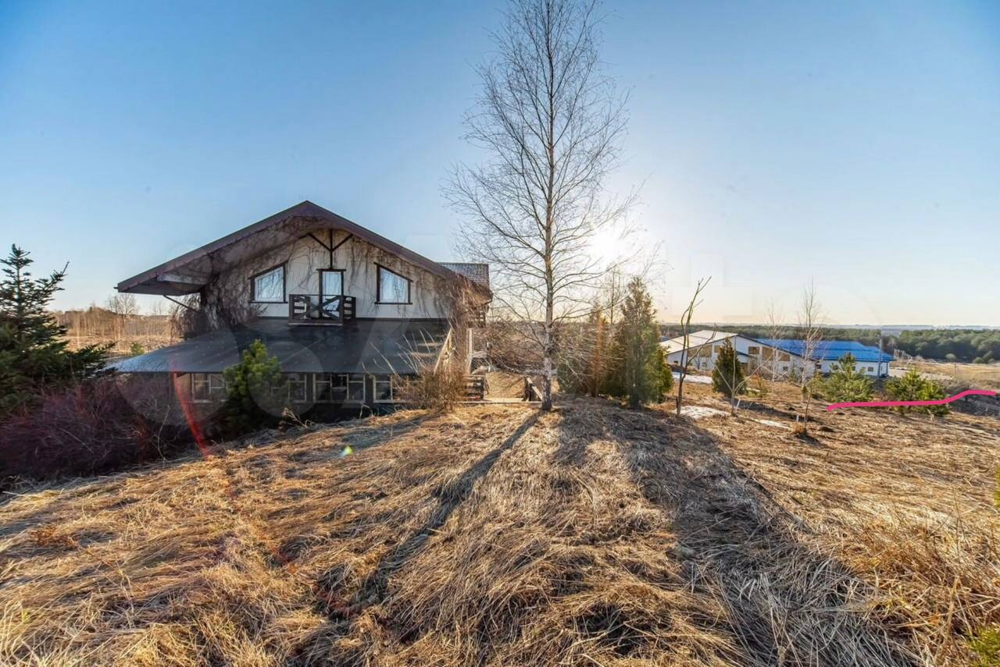

Пространство
Дом, в котором можно работать, отдыхать и оставаться
Home Lab собран как живой загородный дом: общие зоны для работы и встреч, спальни для ночёвки, сауна, джакузи, барбекю, летний бассейн, кухня по согласованному сценарию и окрестности для прогулок.
Что есть в доме
Базовые зоны и возможности
Еда и кухня
Еда — по сценарию заезда
Питание обсуждается заранее. На старте основной формат — меню из ближайшего ресторана: можно собрать завтрак, обед, ужин или лёгкое сопровождение для рабочего дня.
Также есть зона барбекю, которую можно использовать по договорённости.
Кухня в доме — аккуратная сервисная зона, поэтому формат её использования согласуется заранее. Нам важно, чтобы место питания оставалось чистым, спокойным и комфортным для всех.
Варианты питания: ресторанное меню, доставка, барбекю-зона по договорённости, чай/кофе, лёгкие закуски, индивидуальный формат под заезд.
Окрестности
Рядом — природа и активный день
Дом находится рядом с городом, но ощущается как приватная загородная локация. В пешей доступности — поля, прогулочные маршруты, конный клуб с рестораном, мототрек, велотрек, прокат квадроциклов и байков.
Также есть велосипеды — можно покататься по окрестностям и провести часть дня на свежем воздухе.

Фото